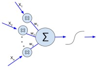
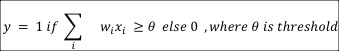
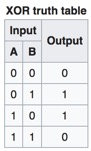
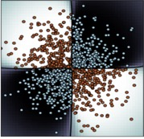
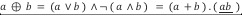
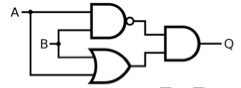
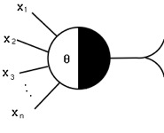
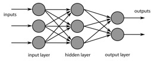
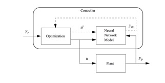
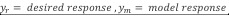

Artificial
Neural Network ( ANN)
Mankind has always been mesmerized , sometimes intimidated by the complexities and mysteries of our human body, especially the brain. Our brains are equipped not only to store information, but are able to discern the right vs wrong, or between objects / persons/ actions. Though consciousness is not something we can impart into AI , we can simulate the neural activities within a cerebrum and still produce great results for practical applications. AI as we know today is largely approximative in nature heavily reliant on probabilistic theories especially Bayesian inference . AI is still far behind perhaps even Pre Galilean in cognitive science according to eminent linguist and thinker Noam Chomsky - algorithms today can string words and output a poem but with no understanding of its meaning . However approximating the nature of a large pool of data using statistical tools and various network architectures of ‘neuron like’ units , has proven to be useful in engineering applications.


Shown here is a schematic diagram of a brain cell neuron . Dendrites are the input points , Nucleus the summation function point and the Axon carries the output (akin to sigmoid) to the next neuron/s . This is similar to a simple logistic unit . During any cerebral activity , participating neurons can either be in excitatory / inhibitory state [ 1 or 0 ] . Likewise relevance of an input is achieved by assigning weights in a logistic unit. An input with a positive weight is excitatory and an input with negative weight acts as inhibitory.
XOR and
Perceptron
The linear classifier unit we have so far gone on depicting as a ‘logistic unit’ was in its earliest form called a ‘Perceptron’ . Instead of the logit function, a perceptron predicted 0 or 1 based on whether the summation of weighted inputs was above or below a threshold amount. Perceptron algorithm is as follows

In 1969 , Marvin
Minsky and Seymour Papert of MIT in their book “Perceptrons: an introduction to computational geometry “ mathematically analyzed the strengths and limitations
of a perceptron. As an example of a limitation, they argued that a
perceptron is incapable of computing XOR or its inverse XNOR function. Some of
their critics say they’d implied that even multi layer
perceptrons fall short in solving such problems and
this led to the slowing down of research in AI between 1970s and 1980s.
If we look at the boolean function XOR ( Exclusive
OR) as given in the below table for two inputs, we see that the output is 0
when both the inputs are of same value else 1 . That means diagonally opposite
data points belong to the same group { ( 0,0 ) , (1,1)
} & {(0,1), (1,0) } , which is not
something that can be linearly classified.
A similar real world example depicted below :
 
(Source :
https://en.wikipedia.org/wiki/Exclusive_or)
Boolean XOR predicate can
be given as .
This logical gate representation shown here
clearly points that XOR is a composite function of two simple functions ( OR and
NAND ) . A simple perceptron is not
equipped to work out a function of a function/s. This particular problem pointed out by Minsky
and Papert may have stumbled the researchers on its
march, but not for too long as this led to the idea of multilayered network and
eventually to the evolution of feed forward neural network as we know today.
Warren McCullogh
a neuroscientist who was inspired by Principia Mathematica - the book by
Bertrand Russel and Alfred North Whitehead where they prove that any complex
computation can be built using seemingly simple propositions ( true/ false or
0/1) , began to see neuron cells in this new light as they too seemed to be
binary - a neuron fires electric signal
if enough preceding neurons manage to excite it otherwise remains
inhibitory. . Along with mathematician
Walter Pitts ,he began to work on a modelling
brain that could compute just like a network
of logic gates ( OR, AND, NOR etc) . In their paper “A Logical Calculus
of Ideas Immanent in Nervous Activity,” , they proved
that a network of computing units has the capability to compute any complex
function. In the generalized version of Mcculloch-Pitts
unit, is the threshhold and input and output are
binary ( either o or 1 ) . If sum of inputs is greater
than , the unit
gets excited. 
Minsky and Papert were obviously
familiar with McCullogh-Pitts network and knew that perceptrons interconnected with several hidden layers would
solve nonlinear problems like XOR. What they did not know was a way to ‘learn a network
‘.
Feed Forward and Back propagation

Taking the cue from XOR problem, AI researchers
understood that several hidden layers bridging the input and output layers is
the next step to address non linearity of many real
world problems. They could randomly assign weights and biases to each node /
neuron and arrive at a probability of the output being part of a certain
class. Fine tuning such a network to
correctly classify a group of data into various classes would require adequate
training of the network. Through training, the network can self
adjust its weights to give proper weightage to each layer. But how can several layers of
weights and bias be adjusted from a Cost function ? This is where back propagation comes to the
rescue.
This idea of back propagation was first presented in a PHD
thesis in 1974 by Paul Werberos taking in cue from
the feedback loop concept
in Control Systems . The method of minimizing cost function using
gradient computation was applied in backward propagation by Rumelhart et al around 1985.
The idea is to share the error across the network (
nodes + edges) and adjust parameters such as weights until the network
approximates to this unknown function
that generalizes a given sample of data.
Error/Cost calculated
at the outermost layer is propagated  Source :
https://www.qwertee.io/blog/an-introduction-to-backpropagation/
Source :
https://www.qwertee.io/blog/an-introduction-to-backpropagation/
backwards to its preceding layer of nodes. Then each edge
incoming to this node can calculate locally the deviation each of their weights
are responsible for . Shown here is a diagramatic representation of how chain rule is used in
computing the gradient wrt parameters
. This sort of localized computing makes it easier to propagate all the way back to the
bottom most layer.
Application of NNs
Today’s high performance parallel processing via GPUs ( Graphical Processing Units ) have allowed training deep
networks easier. Auto differentiation packages like Tensorflow
allows gradient descent optimization of parameters through vector operations. This back propagation
property of NN is now being capitalized in areas which have dynamic systems
like the trajectory of Robotic arm or a driverless car.

For example , a PID (Proportional,Integral and Derivative)controller is a feedback loop employed in systems that
require constant response modulation like a cruise control in a car. A PID controlller is though effective in linear systems, it gets
troublesome when the systems are non-linear and large disturbances can cause
considerable lag time. This is where a neural network based controller has
apparent advantage . Shown above is a simple neural
network predictive controller () . There
are other models of NN controllers , suggested reading for more details http://www.geocities.ws/djorland/NNControl.pdf